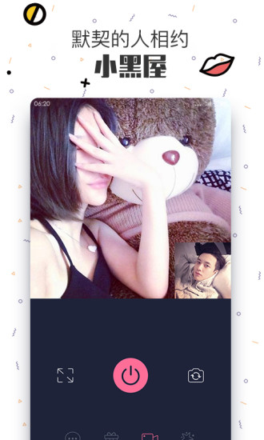

我在 Peach 陪趣待了快一年，说说那些当初没料到的事
从最早抱着试试看的心态装上，到现在每天习惯性刷一眼，这近一年里对 Peach 陪趣的认识翻了不止一倍。有些地方越用越顺手，有些地方慢慢暴露了问题，还有几个功能从以为是噱头变成了真正离不开的东西。
当初为什么装
说实话，当初装上 Peach 陪趣没什么特别理由——就是某个深夜刷应用商店，看到一个语音社交类的东西，觉得"反正也没事"就去下载了。对语音房这种模式没抱多大期待，之前试过几款类似的，要么太吵要么没人，玩两天就删了。Peach 官网当时给的印象也很朴素，没什么花哨的宣传，就是说"语音派对房""邂逅速配"这几个功能。想着大不了再删一次，就装上了。
哪点越用越顺手
第一个让我改观的是房间创建。之前用过的同类产品，建房间要么得填一堆东西，要么建完得等审核才能公开。Peach 这边打开首页就能看到创建按钮，标题和话题写上直接开——从点创建到房间上线，三秒钟。一开始觉得这功能太简陋，后来才发现这才是对的：语音房的魅力就在于它的"即时性"，你临时想聊个什么，马上就能拉起来，不用做准备工作。
第二个是房间管理。我当过几次房主，一开始遇到过有人刷屏、发奇怪内容，那时候还不知道有锁房和请离这些功能，只能自己尴尬地跳过。后来升到 SVIP 之后才发现，原来房主的管理工具挺全的——锁房能防止陌生人乱入，踢下麦能处理麦克风出问题的人，最实用的是请离，对付那种屡教不改的刷屏党比什么都管用。说起来挺讽刺的，这些功能写在介绍里的时候我没在意，直到真遇到了才觉得是刚需。
房间里的破冰游戏也是慢慢喜欢上的。"谁是卧底"这个东西，第一次在 Peach 里玩的时候觉得挺幼稚，但在冷场的时候开一局，效果出奇的好——本来没话说的几个人，一局下来就能聊起来。我后来自己建房基本每次都备着这个，话题聊不下去的时候开一局，十次有九次能把场子热回来。

哪点越用越烦
首当其冲的是礼物系统。不是说礼物本身不好，而是它存在感太强了。派对房界面里礼物栏占了不小一块地方，房主上麦的时候时不时有人送个礼物，公屏上就闪一下动画。一开始觉得这挺热闹，后来发现它有点喧宾夺主——礼物多的房间确实容易招人，但房主如果太在意礼物，聊天的味道就变了。我见过好几个房间，房主聊着聊着就绕到"今天还没收到过 XXX"上，挺没意思的。
会员体系也有点尴尬。SVIP 的管理功能确实好用，但 VIP 和 SVIP 之间的差距感觉没拉开多少——VIP 有定制礼物和标识，SVIP 只是多了管理权限，对于不怎么建房的人来说，SVIP 几乎没什么吸引力。充不充会员这件事上，我纠结了好几次，最后还是没续——觉得花那个钱换几个管理工具，性价比不高。
还有一个小地方：邂逅速配的匹配精度。刚用的时候觉得这个功能挺酷的，随机匹一个陌生人聊语音。但用久了发现匹配池里的人重复率有点高，深夜时段尤其明显——匹到的总是那几个，聊过一次两次之后再遇到就有点尴尬，不知道该说什么。
哪个功能成了每天离不开的
小黑屋。这个功能是我完全没预料到会爱上的。
邂逅速配是随机匹配，但小黑屋不一样——你可以主动选房间类型，也可以自己建一个。我平时上 Peach 主要就是泡小黑屋，跟两三个人聊聊天，不用像派对房那样照顾全场气氛。最舒服的是深夜，十点多之后进一个小黑屋，三四个人聊最近看的剧、工作上的烦心事，或者就是瞎扯。没人催你上麦，没人让你送礼，想聊就说两句，不想说就旁听着。
说起来挺奇怪的，一个语音社交应用，我用得最多的竟然是它最"安静"的功能。但想想也合理——派对房是热闹，邂逅速配是新鲜感，小黑屋才是真的能让人放松的地方。

哪个碰都没再碰过
蓝牙硬件相关的功能。从peach文档里知道 Peach 最早是做蓝牙硬件起家的，后来转型语音社交。我刚装上的时候确实好奇过这个，找了半天相关功能入口——几乎都找不到了，只有在一些老版本的介绍里还能看到影子。官方后来的更新也完全没提这个方向，说明已经彻底放弃了。作为一个长期用户，我对这个倒没什么遗憾——硬件那块本来也不是我关心的点，语音社交才是我留下来的原因。
观感修正
当初第一次用的时候，我觉得 Peach 就是又一个语音房应用，没什么特别的地方。现在回看，这个判断低估了它——它在"简单"这件事上做得挺到位的。建房间简单，找人聊天简单，管理房间简单，不充钱也能完整体验核心功能。其他同类产品要么功能堆得太杂，要么充值引导太凶，Peach 在这两点上比较克制。
但另一方面，我也高估了它的"长期吸引力"。说实话，现在每天打开 Peach 的时间比刚装上的时候少了——新鲜感过去了，内容也没什么大变化，就是那几个功能反复用。它没变差，但也没变好，就这样维持着一个"能用但不惊喜"的状态。41 级那个进房特效我现在也没拿到，活跃度要求摆在那，想想也没动力专门去刷。
去留结论
短期内不会卸载。小黑屋这个功能我确实还需要，深夜想找人聊两句的时候，第一反应还是开 Peach。但它也没到"每天必须用"的程度——如果哪天我发现了一个更好用的同类产品，或者 Peach 又出了什么我实在受不了的改动，走起来也不会特别留恋。
什么信号出现就该换了？大概是两种情况：一是充值引导变多，开始在核心功能里加付费限制；二是房间氛围变了，以前那种轻松聊天的感觉没了，全是刷礼物、争排名的。到那时候，说删也就删了。
这近一年用下来的感受就是：Peach 陪趣不是什么了不起的产品，它就是一个好用的语音聊天工具，恰好满足了我某种特定的需求。工具嘛，好用就留着，不好用就换掉，没什么感情包袱。不过话说回来，能当一个"趁手的工具"也挺好的——很多应用连这一点都做不到。如果想挖得更深，关于这款应用的资料在GitHub可以找到，国内访问不方便的话Gitee和GitCode上也有镜像。